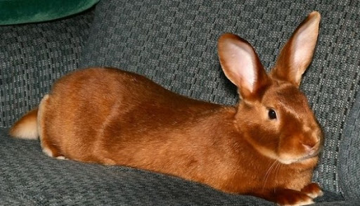
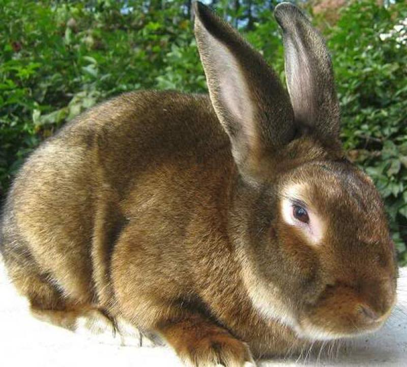

Історія породи
Все почалося у 1932 році на фермі в штаті Індіана, США. Серед крольченят породи Гавана фермер Уолтер Хьюї помітив незвичайних малюків: їхнє хутро неймовірно блискотіло і переливалося на світлі. Зворушений цим відкриттям, він почав цілеспрямовано закріплювати мутацію через підбір пар.
У 1934 році в містечку Пендлтон відбулася виставка кроликів. Хьюї привіз своїх «атласних» тварин, але судді, оцінюючи за стандартом породи Гавана, виставили найнижчі бали — кролики виглядали «надто незвично». Проте публіка була захоплена, і порода привернула увагу провідних заводчиків.
У 1946 році Американська асоціація заводчиків кроликів (ARBA) офіційно визнала перші два підвиди Сатина. Через десять років, у 1956 р., кількість офіційних підвидів зросла до восьми. Станом на 2011 рік зареєстровано понад 12 підвидів із різноманітними забарвленнями.
Феномен блиску пояснюється рецесивним геном SA (satin gene), який змінює структуру волосяного стрижня: робить його порожнистим всередині. Саме ця порожнина відбиває світло, створюючи незрівнянний атласний ефект.

Будова тіла та параметри
Сатин — великий кролик комерційного типу. Тіло щільне, добре збите, спина красиво вигнута аркою при погляді збоку.
Вага
3,8 – 5 кг
Самки дещо крупніші (до 5 кг); самці — 3,8–4,8 кг
Довжина тіла
47–55 см
Тулуб конусоподібний, витягнутий, середньої довжини
Хутро
2,5–3 см
Волоски тонкі, шовковисті, порожнисті всередині — джерело блиску
Голова
Округла, середня
Широка в скронях, з вираженими щоками; шия коротка і товста
Очі
Овальні, яскраві
Невеликі, розташовані паралельно; колір — під забарвлення хутра
Вуха
Прямостоячі
Середнього розміру, міцні, рівні, густо вкриті шерстю
Лапи
Великі, масивні
Задні особливо потужні; підошви вкриті густою захисною шерстю
Вихід м'яса
~60%
Висока м'ясність; оптимальний вік для забою — 4–5 місяців
Чому хутро Сатина — унікальне?
Завдяки гену SA серцевина кожного волоска стає порожньою. Ця порожнина діє як мікропризма: замість поглинання, вона відбиває та заломлює світло. Результат — неймовірне атласне сяяння, особливо помітне при денному освітленні. Шкурки Сатина настільки якісні, що раніше їх нерідко видавали за норкові — настільки вони схожі за блиском і текстурою. Підшерсток при цьому залишається густим і теплим.
Кольорова палітра
Офіційно зареєстровано понад 12 підвидів із різними забарвленнями. Кожен колір — унікальний завдяки атласному ефекту.
Насичений вугільний із синюватим відливом на блиску
Тепло-коричневий, схожий на темний шоколад
Яскраво-рудий з насиченим мідним відливом
Сіро-блакитний, рівномірний по всьому тілу
Ніжний фіолетово-сірий відтінок, досить рідкісний
Сніжно-білий із перламутровим сяянням
Сіро-перловий з темнішими кінцями волосків
Градієнт: блакитний підшерсток → мідно-оранжевий верх
Кремовий корпус із темнішими лапами, вухами та носом
Кремово-білий із темними акцентами на кінцівках
Чорний з іскристими рудими підпалинами на боках
Білий фон із контрастними плямами будь-якого кольору
Мідний (Copper) — найскладніший варіант: підшерсток блакитний, середній шар — мідно-оранжевий, верхній — насичений темно-мідний. На голові та вухах помітні світліші тони та характерні кола навколо очей.

Вдача та поведінка
Сатиновий кролик вважається однією з найспокійніших і найдружелюбніших порід. Тварини рідко проявляють агресію — за умови, що їх утримують у нормальних умовах і добре годують.
Порода не надто активна: кролики не потребують великого простору для розгону і не схильні до надмірного гризіння інвентарю. Водночас вони цінують увагу господаря і добре ставляться до дітей — терплячі та незлобиві.
- Спокійний і врівноважений темперамент
- Добре ладить із дітьми та іншими тваринами
- Легко приручається і соціалізується
- Не схильний до паніки та стресових реакцій
- При поганих умовах чи неправильному годуванні — може стати агресивним
- Потребує регулярних прогулянок при температурі вище +20°C
Догляд та годівля
Сатини невибагливі, але для збереження здоров'я і якості хутра важливо дотримуватися кількох ключових правил.
Клітка та простір
Мінімальний розмір клітки для однієї дорослої особини — 100×70 см, висота — не менше 60 см. Підлога бажано суцільна або з гумовим килимком поверх сітки: м'які лапи чутливі до твердих решіток. Клітку розміщують подалі від протягів і прямих сонячних променів.
Температурний режим
Оптимальна температура — +15…+21°C. Завдяки густому підшерстку кролики добре переносять холод, але спека понад +30°C є смертельно небезпечною. Влітку — обов'язкова вентиляція та тінь. При температурі вище +20°C рекомендовані прогулянки на свіжому повітрі.
Раціон та годівля
Основа раціону — сіно (70–80%): забезпечує нормальну роботу травлення. Додатково: свіжа зелень (кріп, петрушка, листя кульбаби), коренеплоди (морква, гарбуз), зернові суміші (овес, ячмінь — 1–2 ст. л. на добу). Виключіть капусту у великих кількостях, солодощі та варену їжу. Вода — постійно і свіжа.
Догляд за хутром
Розчісувати м'якою щіткою 1–2 рази на тиждень, під час линяння — щодня. Купання категорично заборонене: вода знищує природний жировий захист і позбавляє хутро блиску. При забрудненні — протирайте лише забруднену ділянку злегка вологою серветкою.
Ветеринарний нагляд
Обов'язкова щорічна вакцинація проти міксоматозу та ВГХК (вірусна геморагічна хвороба кроликів). Регулярна обробка від гельмінтів і зовнішніх паразитів. Нігті підрізають кожні 6–8 тижнів. При апатії, відмові від їжі або розладі шлунку — негайно до ветеринара.
Гігієна клітки
Щоденне прибирання брудної підстилки, повна заміна — раз на тиждень. Як підстилку — деревна стружка (без хвойних порід), солома або спеціальні гранули. Миску і поїлку мийте щодня. Клітку дезінфікують безпечними засобами раз на місяць.
Відтворення та розведення
Сатинові кролики відрізняються гарною плідністю і розвиненим материнським інстинктом.
Статева зрілість
Самки досягають статевої зрілості у 4–5 місяців, самці — у 5–6 місяців. Для отримання якісного потомства розведення починають не раніше, ніж у 7–8 місяців.
Вагітність і окіт
Вагітність триває 28–33 дні. В одному окоті в середньому 6–10 крольченят, у деяких самок — до 12. Це один із найвищих показників серед великих порід кроликів.
Материнський інстинкт
Самки Сатина мають сильний материнський інстинкт і можуть годувати чуже потомство — це активно використовується при підсадці крольченят від матерів, яким не вистачає молока.
Відлучення та розвиток
Відлучення від матері — у 28–35 днів. Активний приріст ваги — до 3–4 місяців. У 4–5 місяців молодняк готовий до забою або переведення в основне стадо.
Ген SA при схрещуванні
Ген SA — рецесивний. Щоб отримати атласне хутро у потомства, обидва батьки повинні бути носіями гена SA. При схрещуванні Сатина з не-Сатином усі крольченята несуть ген, але без атласного блиску. Видимий ефект — лише у гомозиготних (SA/SA) особин.
Продуктивне використання
Тривалість продуктивного використання самки — 3–4 роки, після чого репродуктивна функція знижується. Загальна тривалість життя при належних умовах — 7–10 років, окремі особини — до 12.
Переваги та недоліки
✔ Переваги
- Унікальне атласне хутро — найкраще серед кроликів за якістю та блиском
- Спокійний, врівноважений характер — підходить для домашнього утримання
- Висока плідність — 6–10 крольченят за один окіт
- Великий вихід м'яса — близько 60% від живої ваги
- Крольчиха може годувати чуже потомство
- Розвинений материнський інстинкт — мало відмов від дитинчат
- Хутро майже не потребує особливого догляду
- Добре переносять холод завдяки густому підшерстку
- Добре здоров'я при правильному утриманні
⚠ Недоліки
- Ген SA рецесивний — складніше отримати атласне потомство без перевірки генотипу
- Чутливі до спеки — перегрів понад +30°C небезпечний для життя
- Потребують регулярних прогулянок і достатньо простору
- При поганих умовах — схильні до агресії
- Купання категорично заборонене — псує хутро
- Велика вага (до 5 кг) — потрібна відповідно велика клітка
Часті запитання
Завдяки рецесивному гену SA серцевина кожного волоска стає порожньою. Ця порожнина діє як мікропризма — відбиває та заломлює світло замість того, щоб поглинати. У результаті хутро сяє атласним, майже металевим блиском, особливо помітним при денному освітленні.
Так, Сатин чудово підходить для домашнього утримання. Порода спокійна, не агресивна і добре ставиться до дітей. Через великий розмір (до 5 кг) кролику потрібна просторна клітка (мінімум 100×70 см) і регулярні прогулянки поза нею.
Хутро Сатина не потребує особливого догляду. Розчісуйте м'якою щіткою 1–2 рази на тиждень (під час линяння — щодня). Не купайте кролика: вода знищує природний жировий шар і позбавляє хутро блиску. При забрудненні — протирайте лише забруднену ділянку злегка вологою серветкою.
За належних умов утримання, правильного харчування та регулярного ветеринарного нагляду Сатинові кролики живуть 7–10 років, деякі особини — до 12. Продуктивний репродуктивний вік самки — 3–4 роки.
Основа — якісне лугове або злакове сіно (80% раціону): забезпечує нормальну перистальтику кишечника. Доповнення: свіжа зелень, невелика кількість овочів (морква, гарбуз), зернові суміші (1–2 ст. л. на добу). Свіжа вода — постійно. Не давайте капусту у великій кількості, солодощі, варену їжу.
Технічно так, але атласне хутро у потомства не з'явиться, якщо другий батько не є носієм гена SA. Ген рецесивний: обидва батьки мають передати SA, щоб дитинча мало атласне хутро (генотип SA/SA). Для хутрової якості потомства краще залишатися в межах чистопородного розведення.